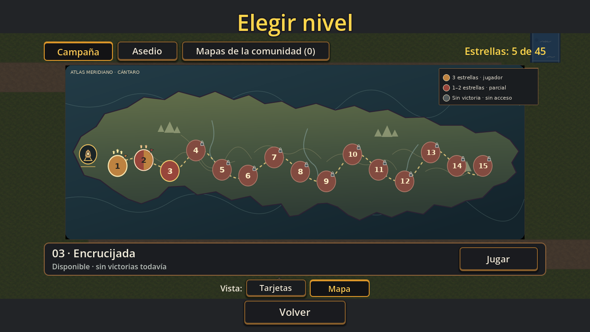
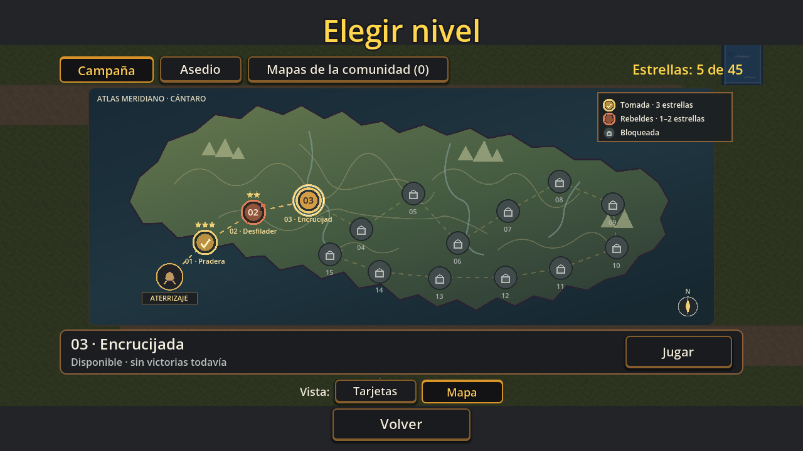

A · Continente del atlas
Perfil irregular basado en T428, con una costa continua y margen para el aterrizaje, la ruta y los quince marcadores.
Comparación con la pantalla original de T428. Las propuestas conservan su paleta, relieve fino, ríos y símbolos; cambia la geografía de la isla y la ruta queda dentro de tierra.
Propuesta A es la recomendada: retoma el perfil quebrado del mapa original y ensancha la plataforma occidental para el aterrizaje y los primeros niveles. B muestra una ensenada amplia en la costa sur. Elegí una, pedí ajustes o indicá qué parte del original querés conservar.
Perfil irregular basado en T428, con una costa continua y margen para el aterrizaje, la ruta y los quince marcadores.
La misma composición y lenguaje gráfico, con una entrada amplia desde el sur entre las zonas intermedias.

Se incluye para comparar el lenguaje visual y la silueta. Los rótulos que aparecen en esta captura son parte de la interfaz anterior y no forman parte de estas propuestas.

Estas son muestras estáticas de desktop. No son arte final, no modifican el juego y no fijan la asignación de biomas ni la posición definitiva de cada zona. La integración espera tu aprobación.